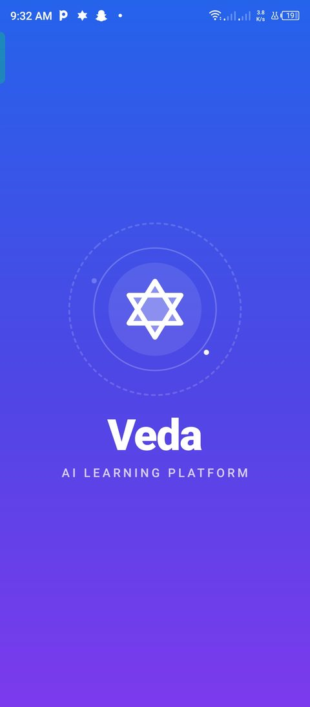
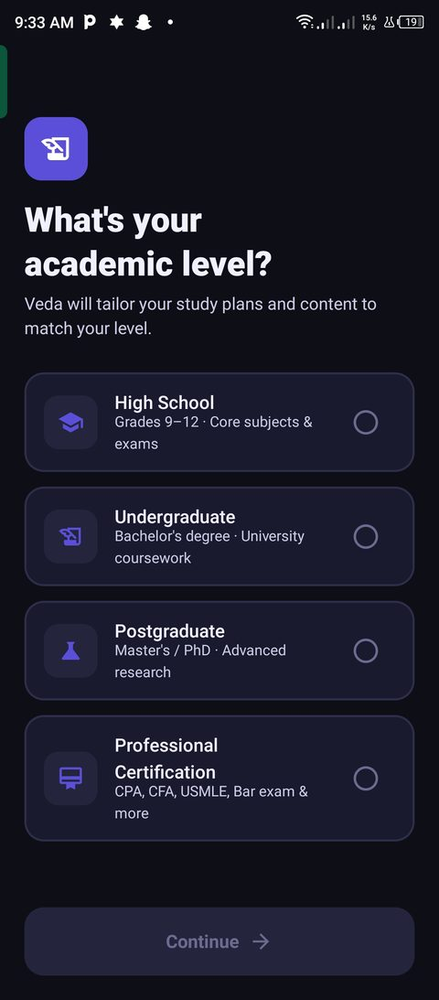
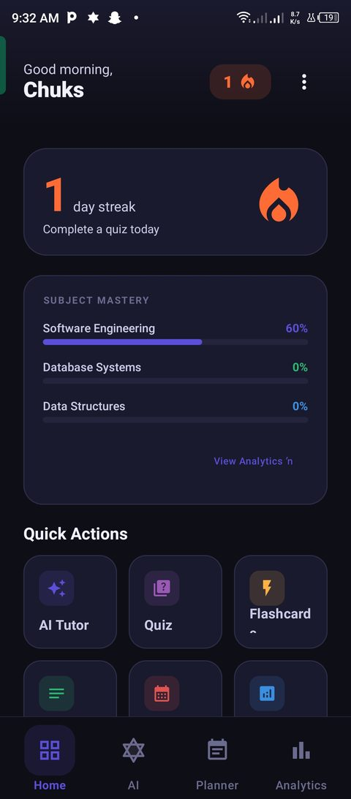
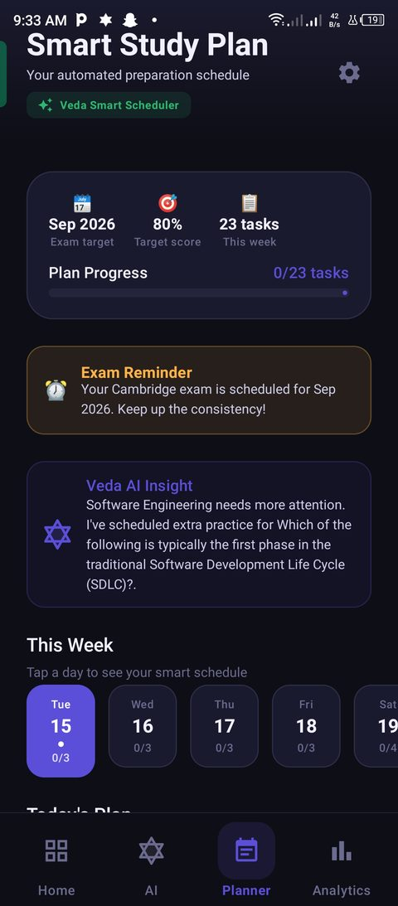
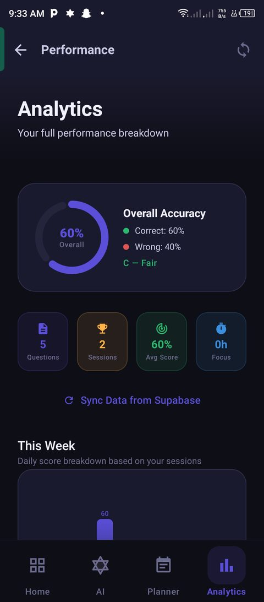
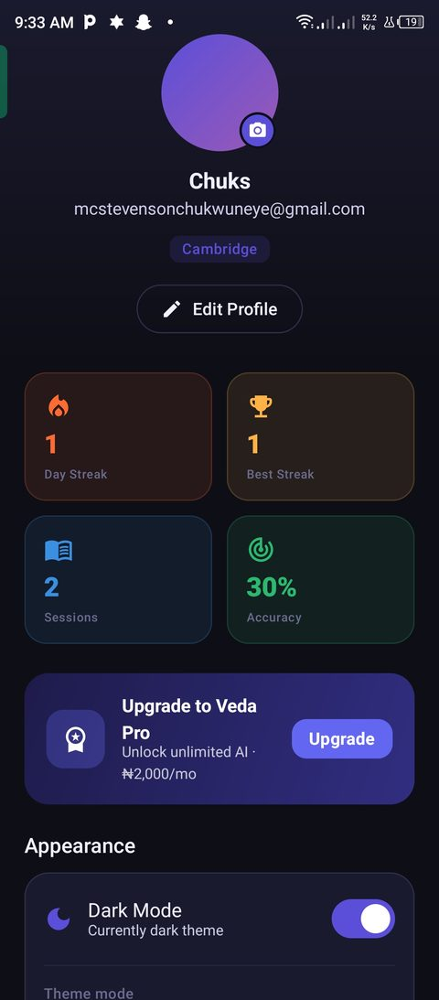
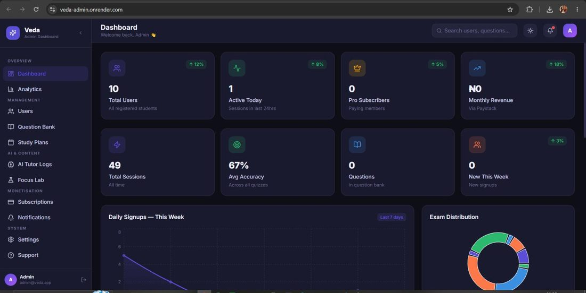
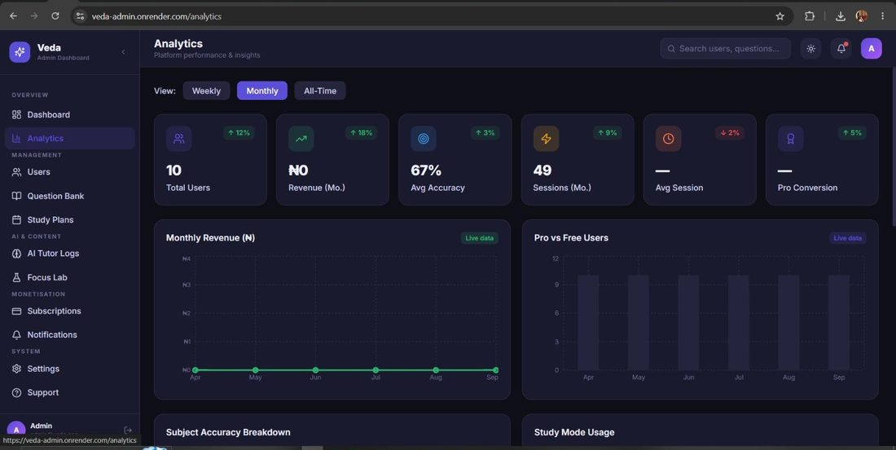
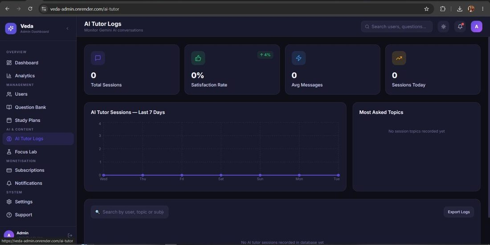
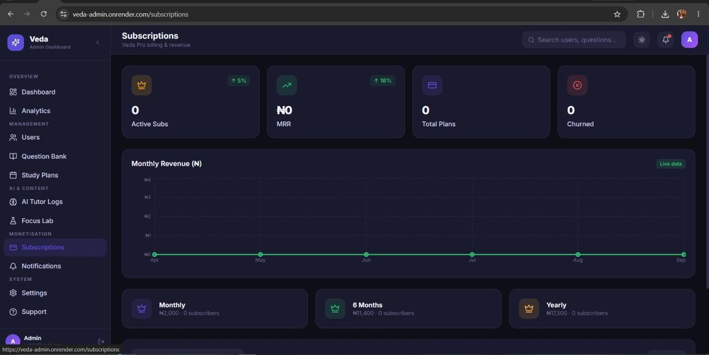

Veda is an AI-powered learning platform designed to help students preparing for examinations study through a more interactive and personalized learning experience.
Overview
Veda is an AI-powered learning platform built to help students preparing for exams study in a more organized, interactive and personalized way. The platform is made up of two connected surfaces: a native Android app for students, and a web admin dashboard used to manage and administer the platform.
Veda was developed collaboratively by our team as a final-year project. My primary contributions were focused on frontend development and UI/UX design across both the student app and the admin dashboard.
The Problem
Students preparing for examinations need accessible, organized and engaging ways to study. Without structure, study sessions can feel scattered — jumping between subjects with no clear plan, no easy way to track progress, and no support in the moment when a concept doesn't make sense.
The Goal
Our goal was to give students one place to study with structure: quizzes and flashcards to test recall, study plans to stay on track, focus tools to manage study sessions, and an AI tutor to lean on when they're stuck — all wrapped in an interface that feels calm rather than cluttered.
The Design
The interface needed to hold a lot of functionality — quizzes, spaced-repetition flashcards, study plans, an AI tutor, notes, and focus tools — without feeling crowded. I approached this by grouping related features into clear sections, keeping navigation shallow, and reusing a consistent set of components (cards, chips, progress indicators) so every screen felt like part of the same system rather than a patchwork of features.
Student App

Splash
Onboarding
Home
Study Plan
Analytics
ProfileAdmin Dashboard

Dashboard
Analytics
AI Tutor Logs
SubscriptionsMy Contribution
Veda was built by a team. My work was concentrated on frontend development and UI/UX design across both platforms — I did not build the backend, the AI system, or the database, which were part of the wider team effort.
Challenges & Solutions
Challenge: Quizzes, flashcards, notes, focus tools and an AI tutor all competing for space in one app.
Solution: I reused a small set of card and navigation patterns everywhere, so each new feature felt like it belonged rather than adding visual noise.
Challenge: The SM-2 algorithm behind flashcards is technical — the interface couldn't expose that complexity to a stressed exam-prep student.
Solution: I designed the rating step as four simple, friendly choices, hiding the scheduling logic entirely behind the interface.
Outcome
By the time of our academic defence, the team had a fully built Android app — covering onboarding, login, subject/level selection, a quiz engine, flashcards with spaced repetition, study plans, an AI tutor, notes, focus tools, and settings — alongside a complete 12-page React admin dashboard for managing the platform.
What I Learned